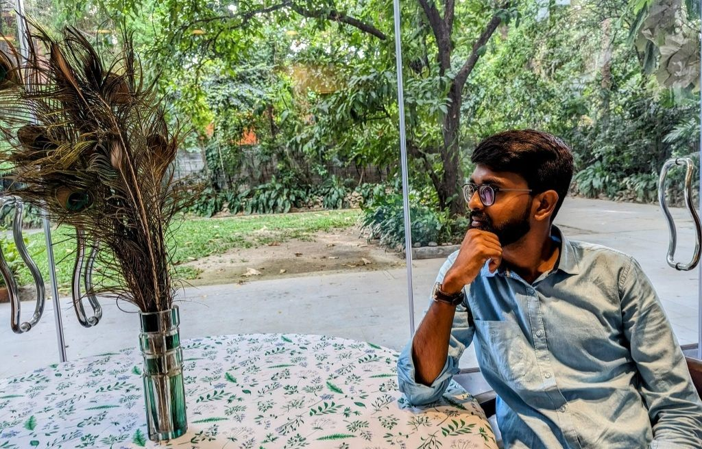
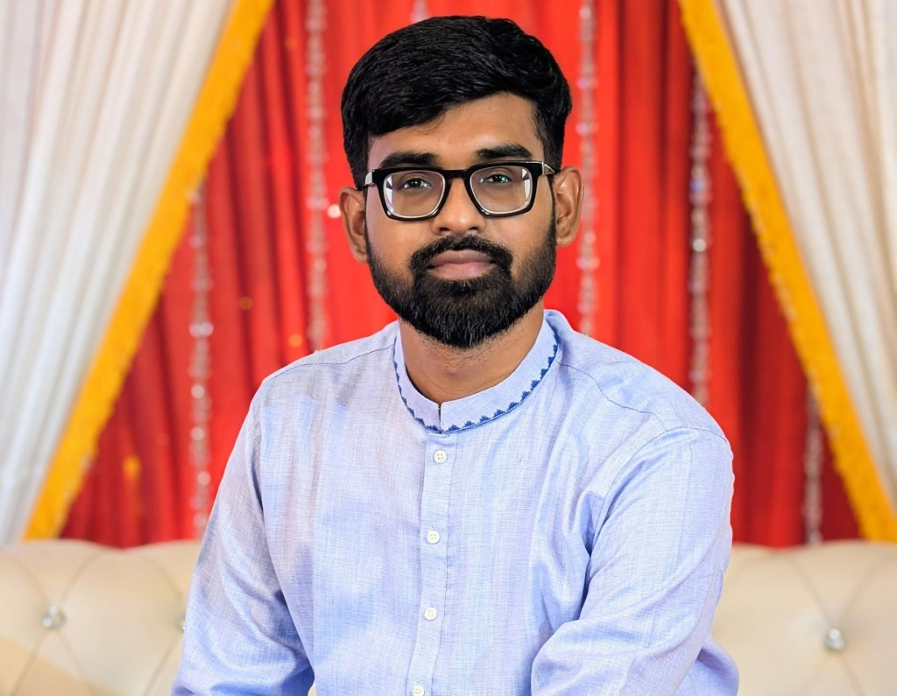
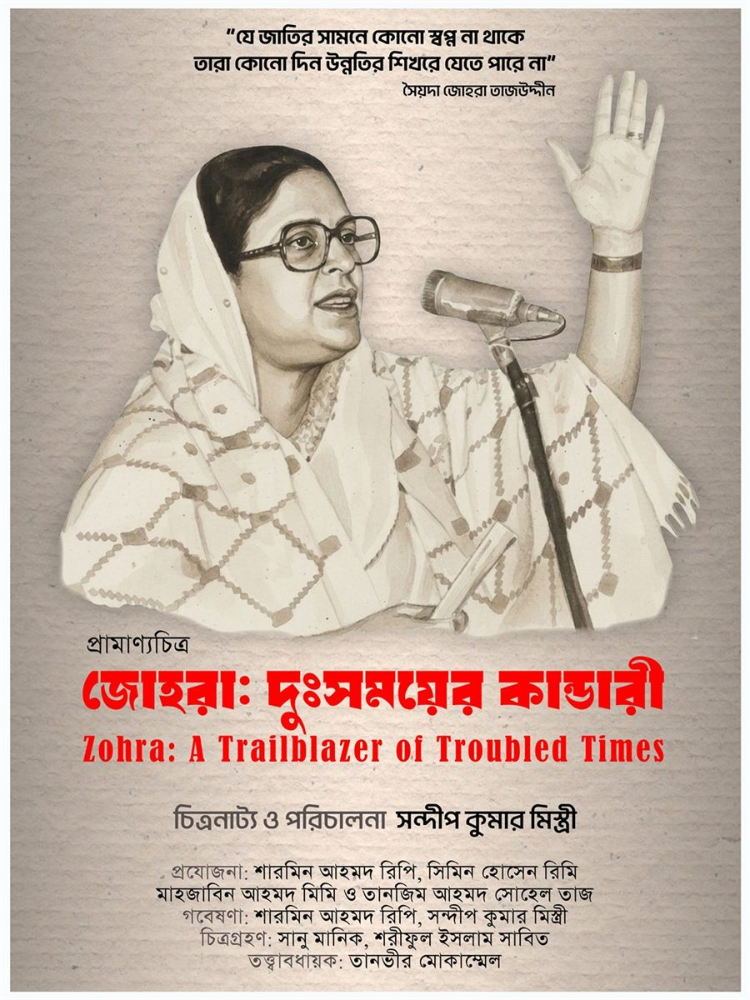
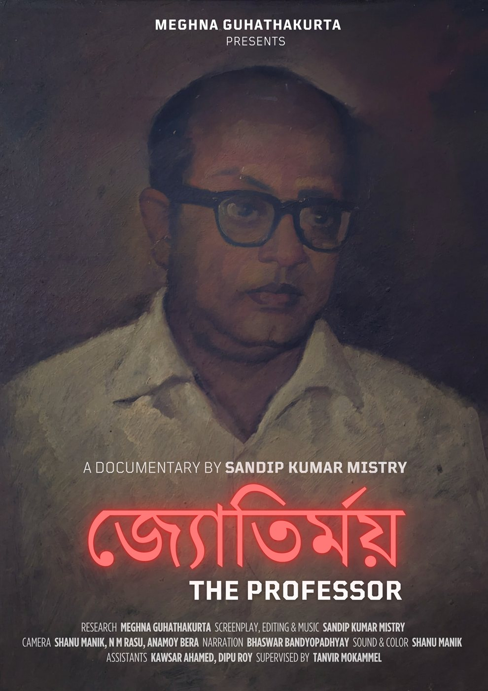
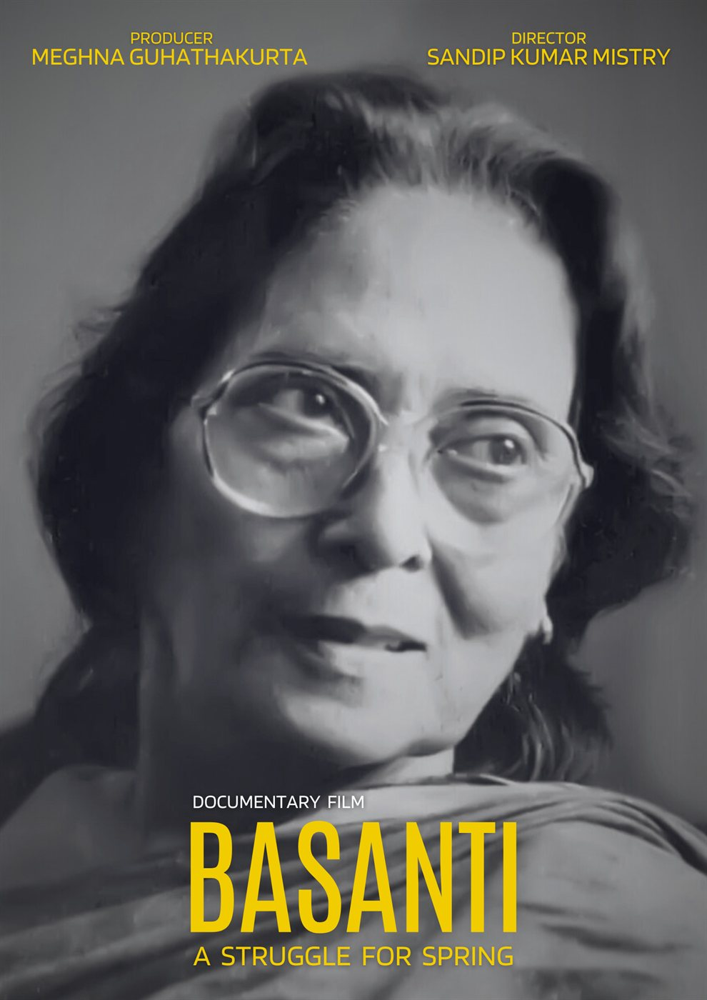
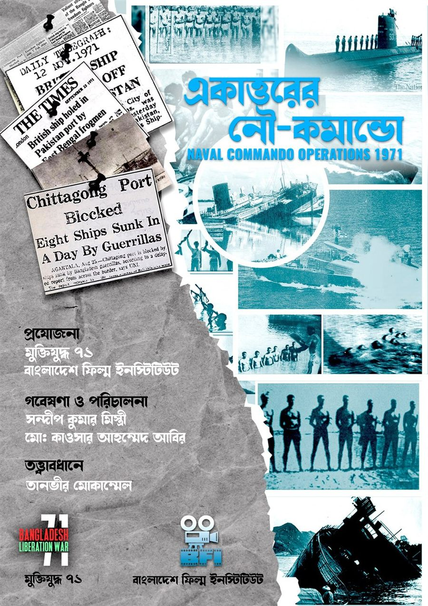
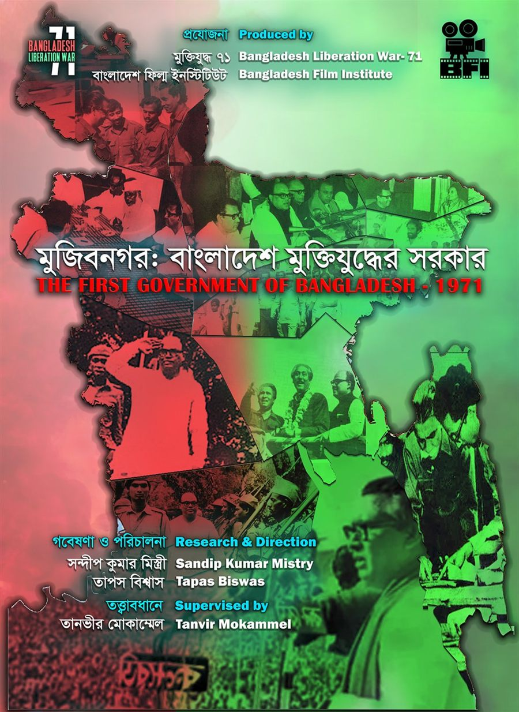
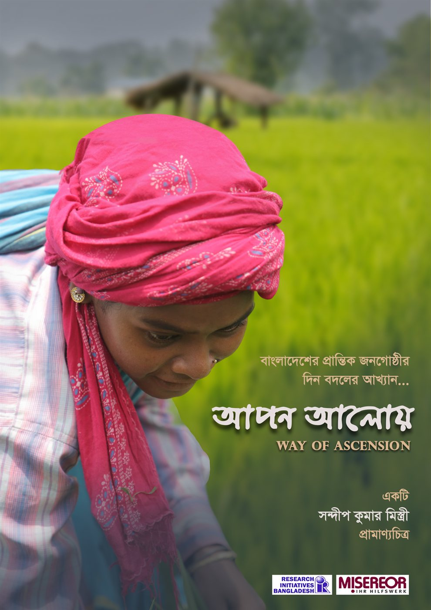
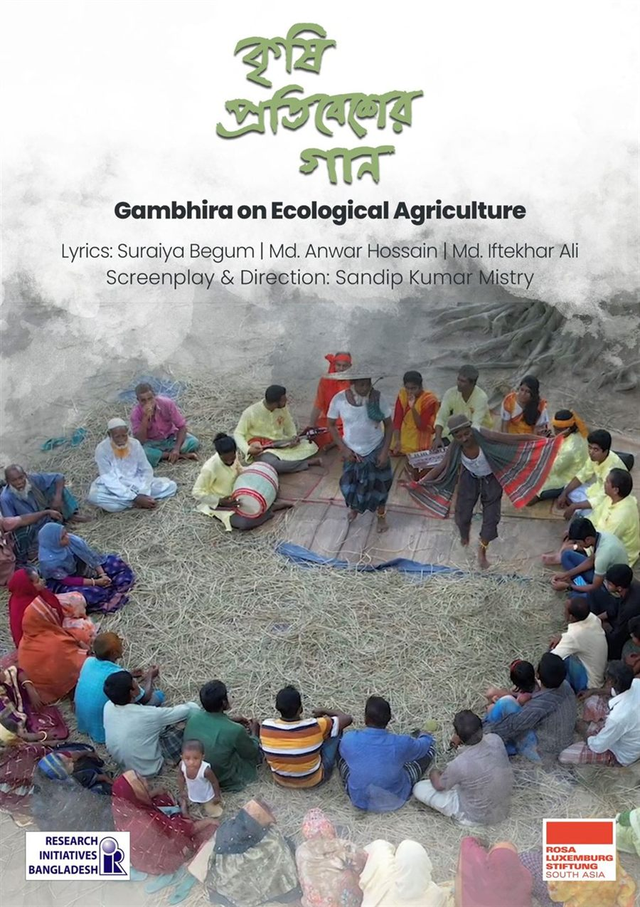

Sandip Kumar Mistry is an acclaimed Bangladeshi documentary filmmaker, researcher, musicologist, and film educator. With an artistic ethos rooted in historical truth, marginalized narratives, and cultural memory, his cinematic portfolio spans seminal works on the 1971 Liberation War, feminist pioneers, and grassroots socio-ecological movements.
After graduating from the Bangladesh Film Institute (BFI) in 2016, Sandip honed his creative sensibilities through masterclasses and continuous artistic mentorship with renowned auteur Tanvir Mokammel at Kino-Eye Films, serving as music composer, assistant director, and research collaborator.
Equally accomplished as a musical scholar, Sandip earned his BA (Honors) and MA in Music from the University of Dhaka, submitting a pioneering thesis on "Rabindranath Tagore’s film thoughts and uses of Tagore’s songs in Bangladeshi films". He subsequently completed an MA in Rabindra Sangeet from Rabindra Bharati University (Kolkata, India) under the prestigious ICCR Scholarship from the Government of India.
A committed leader in film culture, Sandip served as the General Secretary of the Bangladesh Film Institute Alumni Association (BFIAA) from 2022 to 2024, editor of the BFI literary publication Uralchitra, and presently teaches documentary research and filmmaking at BFI while leading cultural initiatives with Porshi Foundation Trust and Bangladesh Mahila Parishad.
Festival Accolades, National & International Honors
| Award / Honor | Film / Subject | Festival / Organization | Year |
|---|---|---|---|
| Best Documentary Award | The Professor (Jyotirmoy) | Ahmadabad International Film Festival, India | 2025 |
| Special Mention | The Professor (Jyotirmoy) | Kolkata People’s Film Festival, India | 2025 |
| Best Documentary Nomination | Basanti | 1st New York Bangla Film Festival, USA | 2026 |
| Exposition of Young Film Talents | Documentary Project | Liberation War Museum, Dhaka, Bangladesh | 2024 |
| Best Short Film Award | Bhasan | 3rd Tareque Masud Short Film Festival, Bangladesh | 2016 |
| ICCR Scholarship | Rabindra Sangeet | Indian Council for Cultural Relations, Govt. of India | 2019–20 |
Selected Documentaries & Cinematic Creations

A deep cinematic exploration into the life, sacrifice, and political leadership of Begum Zohra Tajuddin amidst Bangladesh's liberation struggle and turbulent history. Produced by Bangladesh Mahila Parishad.
Watch Trailer →
Biographical documentary portraying Dhaka University professor and martyred humanist intellectual Prof. Jyotirmoy Guhathakurta, martyred during the 1971 military crackdown. Won Best Documentary at Ahmadabad Int'l Film Festival 2025.
Watch Film →
Chronicling the historical resilience, grassroots rights movements, and courageous struggles of marginalized indigenous and rural women. Nominated for Best Documentary at the 1st New York Bangla Film Festival 2026.
Festival Circuit
A military-historical documentary uncovering the clandestine daring operations and heroism of Bangladesh's naval commandos during Operation Jackpot in the 1971 Liberation War.
Watch Film →
Exhaustive documentary examining the formation, diplomatic strategy, and state leadership of the first government of the People's Republic of Bangladesh formed in 1971.
Watch Film →
A poignant documentary on community self-reliance, educational empowerment, and indigenous women's emancipation produced in association with Research Initiatives, Bangladesh (RIB).
Watch Film →
Integrating traditional Gambhira musical performance with grassroots agro-ecological advocacy, spotlighting native farming knowledge, biodiversity, and soil conservation.
Watch Film →Mentorship, Collaborations & Institutional Endorsements
| Mentor / Reference | Designation & Institution | Relationship / Context |
|---|---|---|
| Tanvir Mokammel | Director, Bangladesh Film Institute & Kino-Eye Films · Eminent Filmmaker | Directorial Mentor, Production & Research Collaborator |
| Prof. Dr. Meghna Guhathakurta | Former Professor of International Relations, Dhaka University · Executive Director, RIB | Research Advisor & Project Collaborator |
| Dr. Sayeem Rana | Assistant Professor, Dept. of Music, University of Dhaka · National Award Winner | Academic Supervisor (MA & BA Music Thesis) |
| Agnibha Bandyopadhyay | Associate Professor, Dept. of Rabindra Sangeet, Rabindra Bharati University, Kolkata | Academic Mentor & Postgraduate Guide |